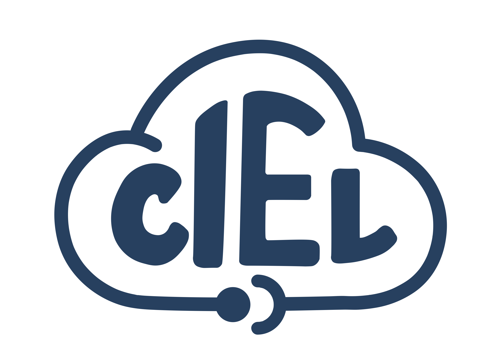

Computation in Education Labs
CIEL's vision is to provide learners with research-based, computational science education and mentorship experiences such that they will thrive in the high skills-based economy of tomorrow.
CIEL’s mission is on training the next generation of critical thinkers from underserved and underrepresented backgrounds to pursue careers in tech, government, and research. We aim to explore the scientific method to teach the value of trial and error, promote critical-reasoning skills. We engage with new technologies, and teach new topics through hands-on experiments.

Teon joined CIEL while serving as a Data Scientist at Mozilla. Prior to his current role, Teon has worked in the open-source community for 6 years developing software for brain imaging research as well as teaching workshops and tutorials on hands-on experimentation, data acquisition and data analysis...
Steve joined CIEL while serving as a Program Officer at Robin Hood Foundation and an Adjunct at the College of Staten Island. Prior to his current role, Steve served as a Program Coordinator for NYU BrainWaves Project. He taught science, technology, engineering, and mathematics at the elementary and high school levels in California and New York.
Mya joined CIEL while serving as a Manager of Global Partnerships at the International Olympic Committee. Prior to her current role, Mya began her career as Director of Operations for the Michael Phelps Foundation.